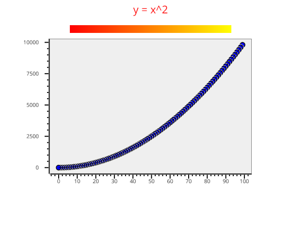

Note
Go to the end to download the full example code.
Line plot and colorbar#

import vispy.plot as vp
fig = vp.Fig(size=(600, 500), show=False)
plotwidget = fig[0, 0]
fig.title = "bollu"
plotwidget.plot([(x, x**2) for x in range(0, 100)], title="y = x^2")
plotwidget.colorbar(position="top", cmap="autumn")
if __name__ == '__main__':
fig.show(run=True)
Total running time of the script: (0 minutes 1.284 seconds)